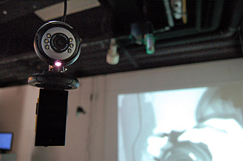

Hardware/Software used:
100Mhz - 3Ghz CORNET ED-15 RF meter for cell phone radiation.
100Mhz - 3Ghz CORNET ED-25G RF meter for detecting directional
digital and analog RF fields.
1Mhz - 8Ghz Alan Broadband Co. ZC 190 B high sensitivity RF meter
for ambient broadband detection.
Processing with JMyron library for
computer vision.
OpenFrameworks for simultaneous face and
motion detection using openCV.
3 PCs connected to single or dual webcams.
Preliminary installation design concept.
Final installation space setup. (Click above for larger image)
UCSD Annex Gallery Installation 06/2009. (Click above for larger image)
Making Hertzian Space Visible:
Hertzian Explorer relies on an unconventional configuration of existing
technologies to connect with the invisible spectrum. EMF meters are
mounted to webcams to perform computer vision analysis of the meter's
displays. Motion detection or brightness/color tracking techniques
are used to convert and transfer the visual data from the meter's
display into numerical data fed into artist written programs running
on hidden computers to help generate visualizations of hertzian space.
In my openFrameworks face distortion program, if the signal strength bar
on the ED-15 meter illuminates and flashes due to the prescence of
radiation, the computer vision algorithm doing motion detection will
convert the changes in illumination to a number that becomes a visualization
parameter. With brightness/color detection, the brightness of the LED radiation
indicator on the broadband meter is converted to a value usable by the Game of
Life based Processing visualization. Lastly, to help generate the side wall
"hot spot" visuals, my Processing program tracks the y-axis position of the
brightest pixel in the webcam video feed of the ED-25's display. This position
data directly corresponds to signal strength.
Two webcams are used to implement the face distortion feature.
As described above, one webcam is used to transfer data from the meter
into software. This camera is doing motion analysis on the RF meter's
display to quantify the amount of radiation into data usable for the
visualization. A second webcam performs face detection. This specially
converted infrared camera is attached to a custom made IR led light for
better illumination and face detection and tracking performance. When
the face of a cell phone user/victim is detected, a distortion effect is
applied over the subject's face area. Using data collected by the first
webcam, the distortion modulates its intensity based on the severity
of RF radiation.



Top Left: Broadband meter + webcam
Top Right: ED-15 Meter + webcam combo driving face detection projection.
Bottom right of image is side view of face detection webcam.
Bottom Left: ED-25G Meter + webcam driving "hotspot" visualization.
Bottom Right: Converted infrared webcam with custom AA powered IR led module.
Timeline:
Week 2 -
Research general concept of project and prior art.
Week 3 -
Further research and testing on sensors and interface technologies.
Week 4 -
Finish research and start linking meter to computer.
Research software visualization implementation.
Week 5 -
Start coding of software visualize.
Week 6 -
Continue coding of software visualization.
Week 7 -
Coding and testing of ideal position and orientation of meters
Week 8 -
Test limited scale prototype with limited
number of arrays and visualization features.
Week 9-10 -
Presentation of prototype and discuss plans to expand scale.
Week 11-13 -
Work on face detection/distortion feature.
Buy further supplies such as usb extension cables.
Week 14 -
Coding visualization work and interaction design.
Work on face distortion features.
Week 15-16 -
More coding visualizations and interaction.
Floor visualization modifications.
Create EMF meter to webcam mount.
Week 17 -
Final scale project testing, refining, debugging
Week 18 -
Further debugging and finishing touches.